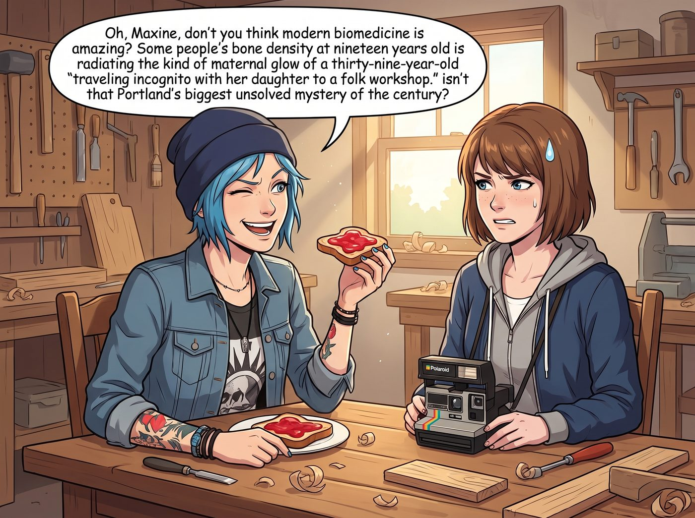
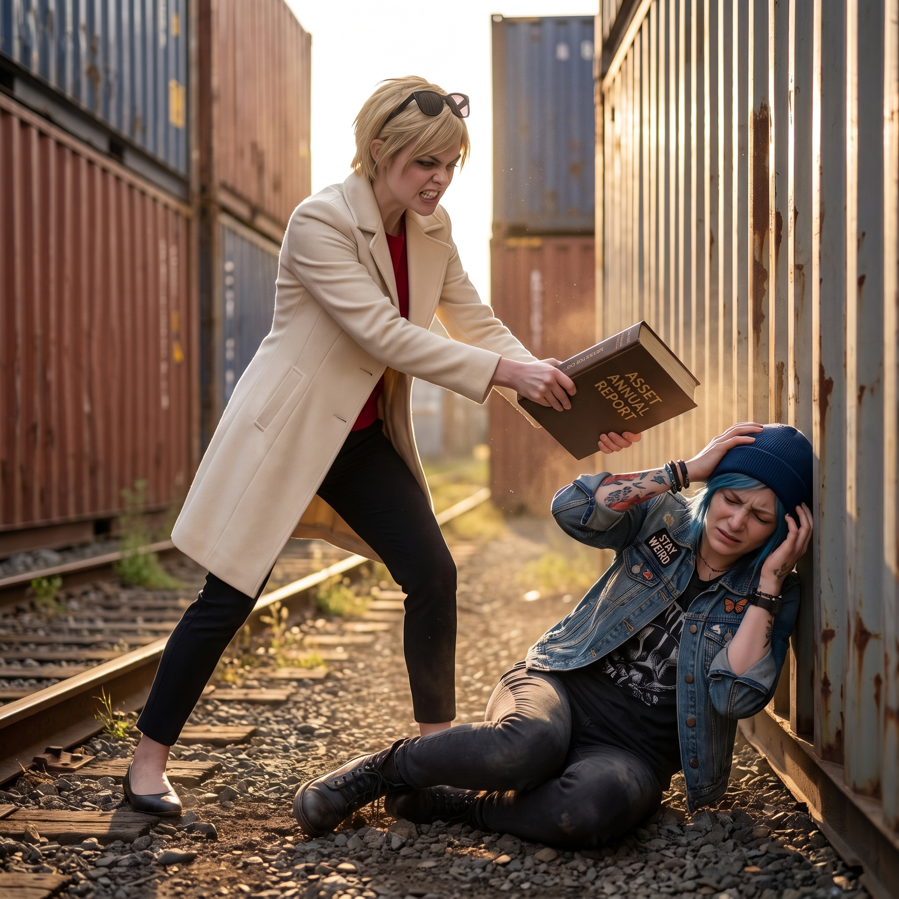
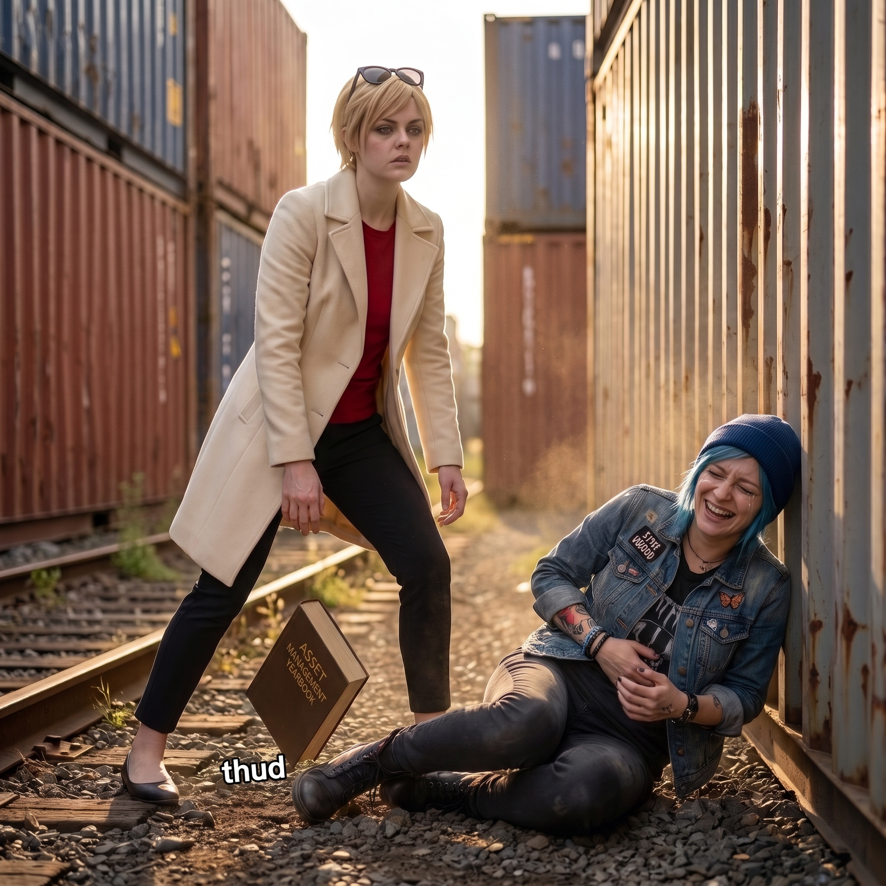
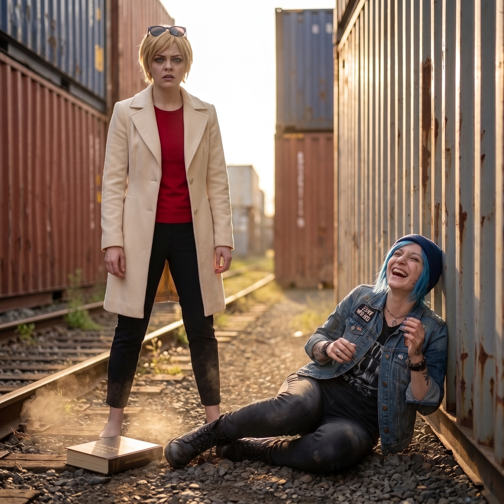

令千金風波之二




週日一整天，Chloe 將她身為「刺頭調侃大師」的語言天賦發揮到了人類極限。
她深知如果直接提「Victoria」或「Kate」會被扣工坊合同條款的錢，於是她開啟了全天候、高頻率、全程不帶一個名字的「精準地圖炮式瘋狂作死」。
一、不指名陰陽怪氣藝術
從清晨吃早餐開始，工坊的空氣裡就充滿了某人的作死回音。
Chloe 嚼著抹滿草莓醬的吐司，故意長長地嘆了一口氣，對著 Max 擠眉弄眼：「哎呀，Maxine，妳說現在的現代生物醫學是不是太偉大了？某些人十九歲的骨骼密度，居然能散發出三十九歲那種『帶千金微服私訪民間工坊』的慈祥母愛光輝，這難道不是波特蘭本世紀最大的未解之謎嗎？」
在車床上加工零件時，她故意把聲音放得極大：「Miles！把那個 19 號的套筒拿過來！對，就是那個看起來像 19 號、但實際氣場沉重得像 39 號的套筒！小心點拿，別摔著了，那可是『豪門正統繼承人』的專用規格！」
二、名媛的理智熔斷
在忍受了整整三個小時的指桑罵槐後，辦公區長桌前傳來了「啪」的一聲脆響——Victoria 手裡的萬寶龍鋼筆被生生按斷了墨水囊。
名媛額頭上的青筋劇烈跳動，深吸了一口氣，優雅地彎下腰，直接把腳上的細高跟鞋脫了下來，換上了一雙原本放在門口的橡膠底工裝平底鞋。
「Price……你今天死定了。」
她隨手抄起長桌上那本厚達五百頁的《西雅圖資產管理年鑑》，眼神裡爆發出獵豹般的冰冷殺氣，猛地朝著二號車廂門口狂衝而去！
「臥槽！殺人滅口啦！！」Chloe 嚇得怪叫一聲，轉身就往工坊外的舊鐵道狂奔！
三、舊鐵道上的追逐與制裁
波特蘭東區的舊鐵道上，換上平底鞋的 Victoria 展現出了常年在私人健身房訓練出的恐怖爆發力，手裡的硬殼年鑑在空中揮舞得虎虎生風，一邊追一邊咬牙切齒地輸出：「無性繁殖是吧？！三十九歲是吧？！豪門慈祥母愛是吧？！」
整整追了幾條街區、繞著二號車廂跑了好幾圈後，Chloe 終於體力不支，被 Victoria 堵死在工坊外圍那截廢棄的集裝箱死角裡，厚重的《資產年鑑》像雨點一樣砸在她護住腦袋的雙臂上。
「嗷！痛痛痛！大股東饒命！我錯了！我再也不提醫學奇蹟了！！」
四、天使的終極背刺
就在 Chloe 被年鑑打得抱頭求饒、Victoria 氣喘吁吁地準備收手時，身後傳來了一陣輕柔的腳步聲。
Kate 繫著圍裙，端著一盤剛出爐、熱氣騰騰的草莓酥皮派走到了露台門口，眼神裡充滿了真誠的擔憂：「Victoria，Chloe……你們跑了這麼久一定口渴了吧？快回來休息一下，吃一塊我……」
Kate 頓了頓，似乎在努力回憶剛才市集上的對話，然後非常認真、極其禮貌地補了一句：「……吃一塊『令千金』親手烤的草莓餡餅吧？」
「噗——咳咳咳咳咳！！！」
躲在二樓窗口拿著相機拍得正起勁的 Max，一口冰紅茶直接噴在了窗玻璃上；被按在地上揍的 Chloe 當場笑得在碎石堆裡打滾抽搐，連身上的疼都忘了；而剛剛平復呼吸的 Victoria，整個人僵硬地站在原地，手裡的《資產管理年鑑》「啪嗒」一聲掉在地上，臉上的表情徹底在崩潰與靈魂出竅之間來回切換——
「Marsh……我宣佈……工坊今天徹底破產了……」
夕陽灑在長滿野草的舊鐵道上，一邊是笑到缺氧打滾的機械師，二樓窗邊還隱約傳來攝影師強忍笑意的悶哼聲，另一邊是舉著熱餡餅一臉無辜的天使，以及徹底放棄掙扎、在初秋微風中凌亂的名媛。
五、越描越黑的二次暴擊
集裝箱死角邊，空氣陷入了一種詭異的死寂。Victoria 僵硬地站在滿地碎石上，眼神空洞得像剛被格式化的大腦；Chloe 則捂著肚子蜷縮在地上，一邊發出像漏氣風琴般的狂笑，一邊瘋狂捶打著身旁的鐵皮。
端著草莓派的 Kate 意識到氣氛似乎有些不對，連忙端著托盤小跑上前兩步，試圖用最真誠的態度來安撫瀕臨崩潰的名媛——然而，她的每一次開口，都在精準地將這個地獄笑話推向更深的深淵。
「Victoria，請不要生氣！我剛才絕對沒有故意開玩笑的意思！」Kate 滿臉焦急，那雙清澈的藍眼睛裡寫滿了真誠與無辜。她走上前，伸出一隻手輕輕替 Victoria 拍了拍風衣肩頭剛才追逐時蹭到的灰塵，語調無比溫柔且誠懇：「其實……那位老奶奶會認錯也是完全合情合理的呀。」
Victoria 的睫毛微微一顫，眼神裡閃過一絲微弱的希望：「……合情合理？」
「對啊！」Kate 認真地點了點頭，掰著手指一條條耐心解釋：「妳看，Victoria 妳平時說話那麼沉穩，處理幾十萬美元的合同時那麼有威嚴，而且妳走路的姿勢和看人的眼神……真的特別像我以前在教會學校見過的那些優雅、有威望的長輩家長呢！而且昨天在攤位前，妳雖然嘴上在罵人，但最後還是把所有草莓醬全買了下來……這不就跟媽媽們一邊抱怨小孩挑食、一邊把整個零食架買空的心情一模一樣嗎？」
Kate 甚至露出了欣慰的微笑，輕輕握住了 Victoria 冰涼的手指：「所以，我覺得這不是在說妳顯老，而是在誇獎妳具備了一種……『超越年齡的成熟母性光輝』呀！」
「……」
二樓窗台邊的 Max 雙腿一軟，整個人從窗沿上滑了下來，相機鏡頭蓋滾了一地；地上的 Chloe 已經徹底失去了發出聲音的能力，整個人把臉埋在滿是機油的工裝褲腿裡，四肢劇烈抽搐，彷彿隨時會笑斷氣。
Victoria 的嘴角狠狠抽搐了三下，深吸了一口氣，聲音從喉嚨深處發出近乎機械般的冷笑：「……母、性、光、輝。Marsh，妳是在用最聖潔的語氣，對本小姐實行合法人格謀殺嗎？」
六、天使還是腹黑：一場全員沉思
二號車廂的全體成員，都在這一刻陷入了沉思——這個總是溫順柔弱的小天使，到底是真無辜，還是切開來裡面全是黑的？
其實只要觀察三個細節，就能精準破譯 Kate 的真實段位。
第一，微表情層面：當所有人都在狂笑或崩潰時，Kate 的眼神始終清澈見底，沒有任何捉弄人得逞後的閃躲或狡黠，她心裡確實覺得「成熟可靠、會照顧人」是對一個女孩極高的讚美——這是九成天然呆的證據。但如果仔細看 Max 事後翻出的高速錄像慢動作，在 Victoria 徹底石化的那一瞬間，Kate 的嘴角極其隱蔽地微微上揚了兩毫米，隨後迅速被「擔憂的蹙眉」掩蓋過去——這是潛意識裡那一成反擊的痕跡。
第二，經歷過創傷痊癒後的鈍角攻擊力：在 Chloe 和 Max 的耳濡目染下，Kate 早就學會了一種極其可怕的技能——用聖母般的純潔姿態，說出最致命的真理。她甚至不需要動用髒話或諷刺，只要把事實用教會查經班的認真口吻陳述出來，殺傷力就足以橫掃全場。
第三，對 Victoria 傲嬌屬性的絕對克制：Kate 太清楚 Victoria 吃軟不吃硬。如果跟 Victoria 對罵，名媛能戰鬥三天三夜；但如果以「天真無邪的女兒/妹妹」姿態撲上去送溫暖，Victoria 所有的傲嬌護甲就會在瞬間被融化成廢鐵，只能硬生生把火氣咽回肚子裡。
七、草莓派的終極超度
面對 Kate 那張寫滿真誠、雙手捧著溫熱草莓派的小臉，Victoria 抬起的手指顫抖了半天，那本重達兩公斤的《資產年鑑》終究是沒能砸下去。
名媛絕望地閉上眼睛，揉著快要炸裂的眉心，一把抓過托盤上最大的一塊草莓派狠狠咬了一大口：「……閉嘴，吃派。還有，從今天起，誰要是再敢在工坊裡用『母』字開頭的任何詞彙——」
Victoria 嚼著酸甜的草莓餡，惡狠狠地瞪了一眼剛從地上爬起來、滿臉眼淚鼻涕的 Chloe：「——我就把妳的道奇皮卡噴成粉紅色芭比限定版，Price！！」
「好的 Chase 夫人！沒問題 Chase 夫人！」Chloe 扶著集裝箱大聲敬禮，引來了又一記差點飛過來的空紙盤。
夕陽將三人的影子長長地投射在二號車廂的鋼板上，伴隨著 Max 咔嚓按下的快門聲，這個融合了天然無辜與高段位暴擊的午後，成了波特蘭最溫暖也最喧鬧的日常註腳。